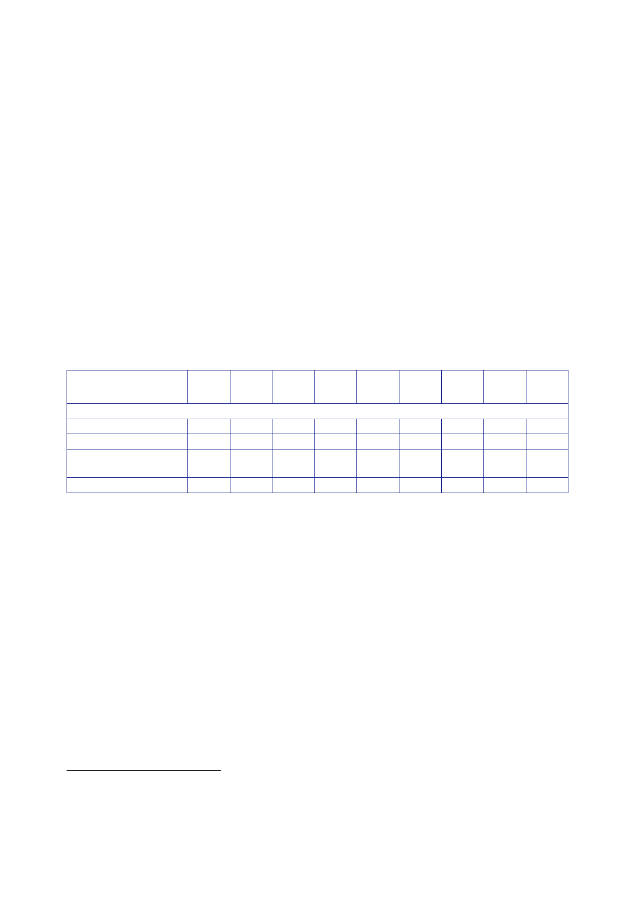

10.2 |
Reconstruction: July 2004 to July 2009
international
community has rehabilitated more than 5,000 schools. Despite
high
unemployment
and the scale of the global recession, economic growth in Iraq
this
year is
predicted to be nearly seven percent.
“Significant
challenges remain, including that of finding a fair and
sustainable
solution to
the sharing of Iraq’s oil reserves, but Iraq’s future is now in its
own
hands …
“At the
core of our new relationship … will be the diplomatic, trading and
cultural
links that
we are building with the Iraqi people, supporting British and other
foreign
investors
who want to play a role in the reconstruction of southern
Iraq.”
1047.
The table
below sets out UK expenditure on humanitarian assistance
and
development
assistance (reconstruction) by UK financial year.
2002/03
2003/04 2004/05 2005/06 2006/07 2007/08 2008/09 2009/10
Total
Humanitarian
and development assistance621
Humanitarian
assistance
19
110
21
5 10 20
16
8
209
Development
assistance
99 27 82 39
20 17 13 297
Imputed
share of multilateral
aid
Sub-total
11
11
6
14
9
14
8
73
19 220 59 93
63 49 47 29 579
1048.
DFID provided
£297m for reconstruction and a further £209m for
humanitarian
assistance
in Iraq between 2002/03 and 2009/10. Iraq was DFID’s largest
bilateral
programme
in 2003/04, when DFID spent a total of £220m. That included
a
£110m contribution
to the humanitarian relief effort following the invasion and
a
£70m contribution
to the World Bank and UN Trust Funds (which would be spent by
the
World Bank
and UN in subsequent years). The size of DFID’s programme
decreased
over the
following years.
1049.
In addition,
UK forces in MND(SE) spent £38m from UK funds on Quick
Impact
1050.
It is not
possible, from the information available to the Inquiry, to produce
a
definitive
breakdown of the allocation of DFID funding between national
programmes
and
programmes in the South. The Inquiry calculates that, from 2003/04
to 2007/08,
617
Letter
Cabinet Office [junior official] to Aldred, 1 July 2011, ‘Iraq
Inquiry: request for further information
on
funding’.
618
Paper DFID,
January 2010, ‘DFID Non-Humanitarian Spend by Region’.
367